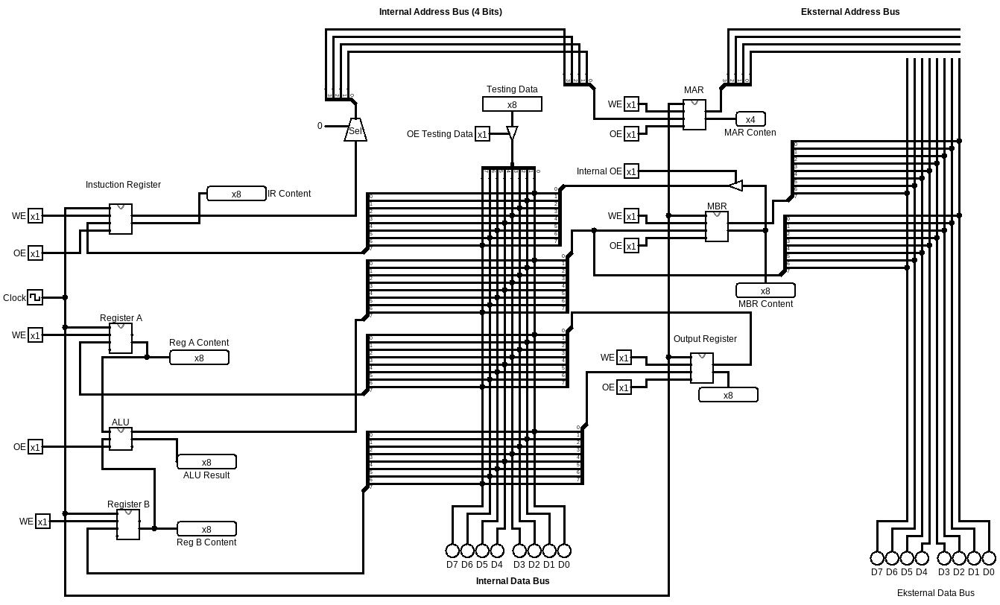

Proyek Mata Kuliah
Mini Processor ini dirancang sebagai proyek mata kuliah Organisasi dan Arsitektur Komputer. Processor dibuat menggunakan Logisim Evolution dengan arsitektur 8-bit yang terdiri atas berbagai komponen utama seperti Register, ALU, RAM, Program Counter, Instruction Register, dan Control Unit.
Lihat Rancangan
8 Bit Processor
Logisim Evolution
Register
Arithmetic Logic Unit (ALU)
Program Counter
RAM
Instruction Register
Control Unit
Mini Processor ini merupakan implementasi processor sederhana berarsitektur 8-bit. Processor mampu melakukan proses pengambilan instruksi (fetch), pengolahan data (execute), serta penyimpanan data menggunakan register dan memori. Rangkaian dibuat menggunakan Logisim Evolution sebagai media simulasi rangkaian digital. Melalui proyek ini saya mempelajari bagaimana sebuah processor bekerja mulai dari proses fetch, decode, hingga execute menggunakan komponen-komponen digital dasar.
Silakan unduh file Logisim berikut untuk melihat rancangan Mini Processor.